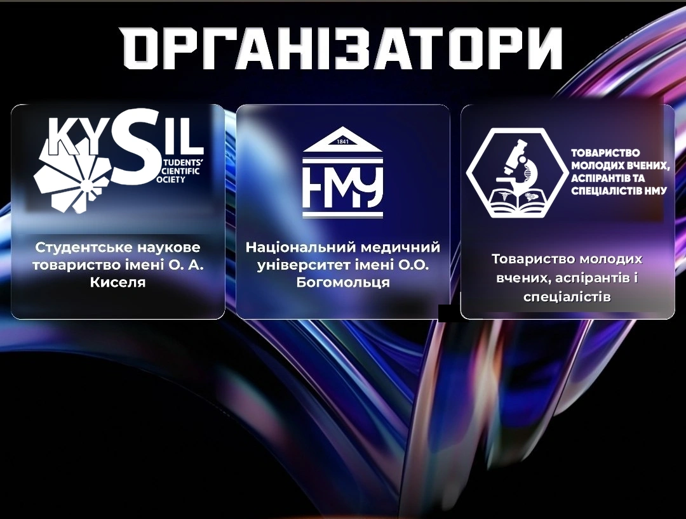
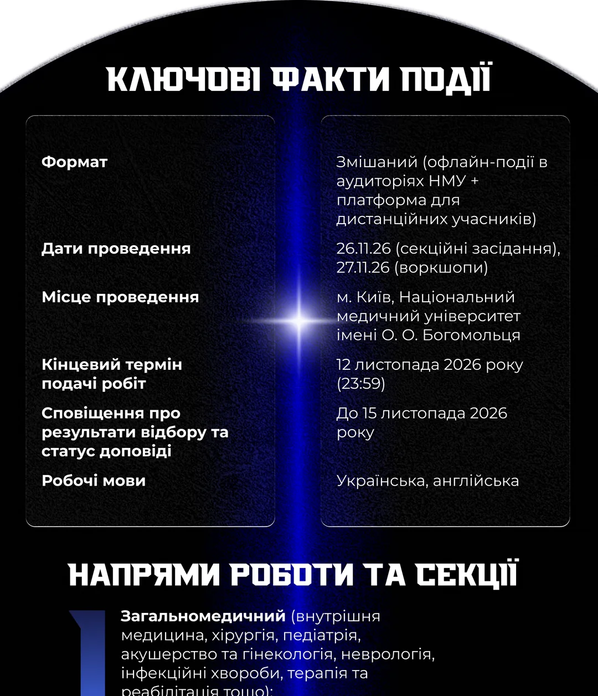
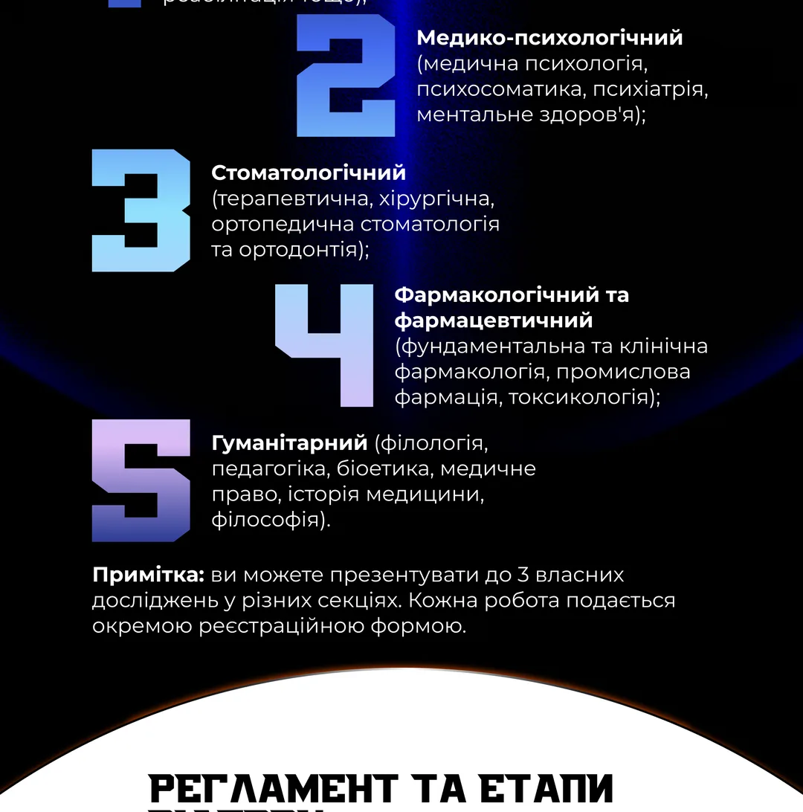

AYMS Conf 2026
Annual Young Medical Scientists’ Conference
Inspires to solve and move forward
Шановні колеги – студенти, лікарі-інтерни, аспіранти та молоді науковці!
Справжня наука ніколи не починається з наукових ступенів чи формальних публікацій. Вона народжується біля ліжка пацієнта, у незручних клінічних запитаннях, біля лабораторного мікроскопа та в нічних годинах розрахунку статистичних моделей. Організаційний комітет Annual Young Medical Scientists’ Conference 2026 радий вітати кожного, хто обирає не просто спостерігати за еволюцією медицини, а рухати її вперед своїми ідеями, експериментами й аналітикою.
Цьогорічний AYMSConf є особливою віхою, що поєднує глибоку історію з поглядом у майбутнє. Ми відзначаємо 185-річчя Національного медичного університету імені О. О. Богомольця та 145-річчя нашого Студентського наукового товариства. До того ж, рівно 90 років тому, у далекому 1936-му, Товариство вперше організувало студентську наукову конференцію, довівши, що голос молодого дослідника здатен звучати потужно й на рівних із визнаними вченими.
Сьогодні ми не просто продовжуємо майже столітню традицію — ми перезавантажуємо академічний простір під виклики сучасності. AYMSConf 2026 створений як відкрита платформа для тих, хто цінує доказову медицину, бездоганний дизайн досліджень, прозору наукову етику та чесну експертну дискусію без формалізму. Тут фундаментальна біомедицина зустрічається з практичною хірургією, терапією та новими технологіями, перетворюючи сміливі гіпотези на реальні клінічні рішення.
Запрошуємо студентів, інтернів, аспірантів та молодих науковців представити свої результати, знайти однодумців для спільних міждисциплінарних проєктів і заявити про себе на головній медичній молодіжній події року. До зустрічі на AYMSConf 2026!

Організатори
Національний медичний університет імені О. О. Богомольця
Студентське наукове товариство імені О. А. Киселя
Товариство молодих вчених, аспірантів і спеціалістів
ЧОМУ ВАРТО СТАТИ ЧАСТИНОЮ AYMS CONF 2026?
- Апробація досліджень на національному рівні: можливість виступити перед фаховим журі та провідними клініцистами України.
- Публікація тез: збірник матеріалів конференції з присвоєнням ISBN та обов'язковим індексуванням.
- Чесна та конструктивна експертна оцінка: фідбек від експертів галузі для подальшого вдосконалення ваших напрацювань.
- Спільнота однодумців: знайомство з провідними експертами, майбутніми колегами та потенційними науковими керівниками з усієї країни.
БОНУСИ ТА ЩО ОТРИМУЄ УЧАСНИК?
- Офіційний сертифікат учасника із зазначенням форми участі (для доповідачів).
- Дипломи I, II, III ступенів та спеціальні відзнаки оргкомітету для переможців секцій.
- Пакет учасника (Welcome Pack) для очних делегатів.
- Доступ до нетворкінг-зон та кава-брейків для неформального обговорення наукових колаборацій.
Для студентів участь у конференції є безкоштовною

КЛЮЧОВІ ФАКТИ ПОДІЇ
- Формат:
- Змішаний (офлайн-події в аудиторіях НМУ + платформа для дистанційних учасників)
- Дати проведення:
- 26.11.26 (секційні засідання), 27.11.26 (воркшопи)
- Місце проведення:
- Морфологічний корпус НМУ ім. Богомольця (м. Київ, Берестейський пр-т, 34)
- Цільова аудиторія:
- Студенти мед. ВНЗ, лікарі-інтерни, аспіранти, клінічні ординатори, молоді вчені до 35 років
- Вартість участі:
- Безкоштовно для студентів; гнучкі тарифи для лікарів та вчених

НАУКОВІ НАПРЯМКИ ТА СЕКЦІЇ
- Внутрішня медицина та кардіологія
- Хірургія, анестезіологія та реаніматологія
- Педіатрія, неонатологія та акушерство
- Фундаментальна медицина та фармакологія
- Неврологія, психіатрія та нейрохірургія
- Онкологія, променева діагностика та терапія
- Стоматологія та щелепно-лицева хірургія
- Гігієна, соціальна медицина та громадське здоров'''я
- Військова медицина, медицина катастроф та травматологія
- Інфекційні хвороби, імунологія та алергологія
- Офтальмологія та оториноларингологія
- Медична психологія, реабілітація та фізична терапія
РЕГЛАМЕНТ ТА ЕТАПИ ВІДБОРУ
- Етап I — Подання тез та матеріалів: Відкриття електронної реєстрації, заповнення форми та прикріплення тез до 15 жовтня 2026.
- Етап II — Рецензування та відбір робіт: «Сліпе» рецензування фаховим оргкомітетом та оцінка дизайну дослідження до 01 листопада 2026.
- Етап III — Оголошення фінальної програми: Публікація списку доповідачів та розклад роботи наукових секцій до 10 листопада 2026.
- Етап IV — Проведення AYMS Conf 2026: Урочисте відкриття, усні доповіді, дискусії, воркшопи та нагородження 26-27 листопада 2026.